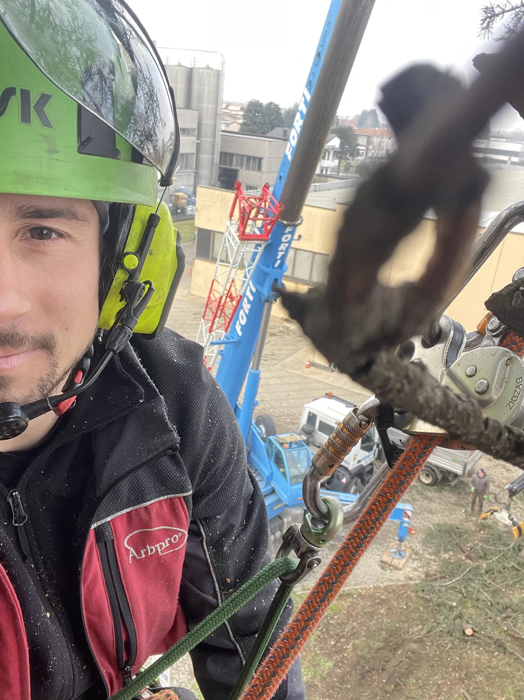

Specializzati nella cura del verde
La Filoverde s.r.l. è il partner di fiducia per la manutenzione delle aree verdi, pubbliche e private.
La società
Da anni ci dedichiamo con passione e competenza alla cura del verde
Offriamo soluzioni personalizzate per ogni tipo di esigenza. Siamo specializzati nella gestione degli alberi ad alto fusto, accompagnandoli in tutte le fasi del loro ciclo vitale: dalla messa a dimora alla fase adulta e all’abbattimento controllato.
Ci prendiamo cura di ogni dettaglio, affinché ogni intervento sia armonioso, efficace e consapevole.

Qualifiche e competenze
Filippo Brusa, arboricoltore
Opera nel settore del verde dal 2015, specializzandosi in arboricoltura. La sua esperienza e formazione garantiscono interventi altamente qualificati e su misura per ogni esigenza.
-
2015
Avvio dell’attività
Inizia a operare nel settore del verde, specializzandosi progressivamente in arboricoltura.
-
2021
Arboricoltore, Regione Lombardia
Ottiene la qualifica di Arboricoltore riconosciuta dalla Regione Lombardia.
-
2022
European Tree Worker
Consegue la certificazione European Tree Worker, riconosciuta a livello europeo.
-
Oggi
Rete di impresa Climbcare
Membro della rete di professionisti dell’arboricoltura Climbcare, con un approccio orientato alla sostenibilità e alla qualità.
Riconoscimenti e reti
Certificazioni
Le nostre certificazioni sono la garanzia di un lavoro svolto con competenza, sicurezza e rispetto per l’ambiente.
Il nostro approccio
Uno sguardo attento alla natura
Un approccio sostenibile che rispetta i ritmi delle piante, le esigenze del paesaggio e quelle delle persone.


Parliamo del tuo verde
Un sopralluogo è il modo più rapido per capire cosa serve davvero.